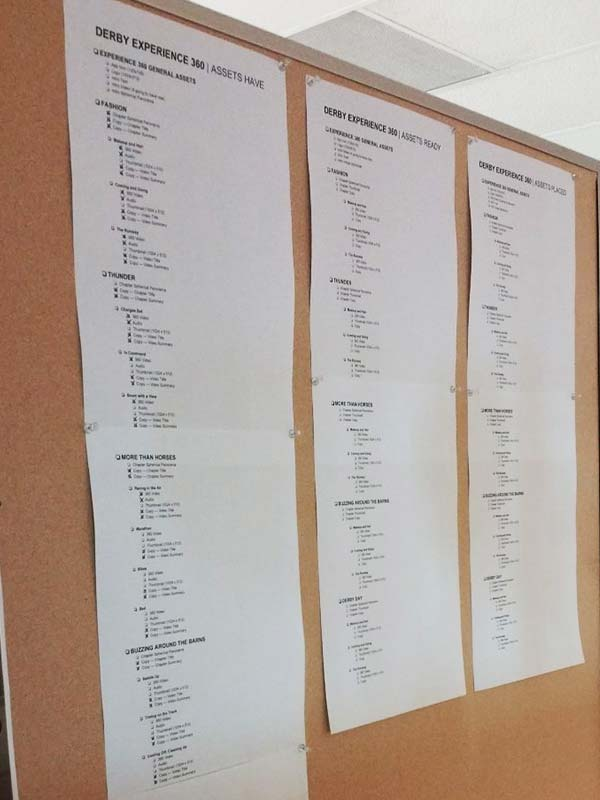
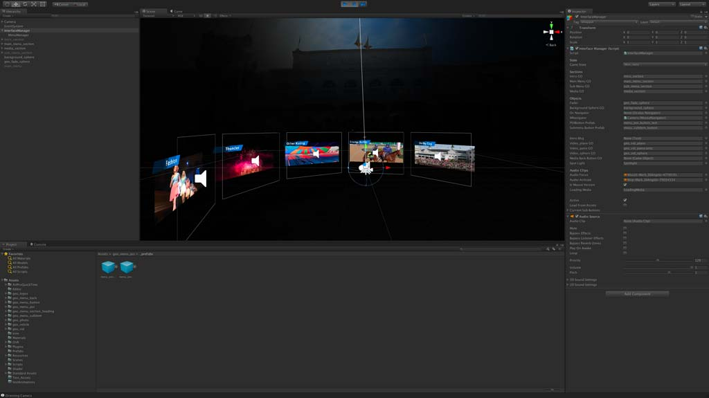
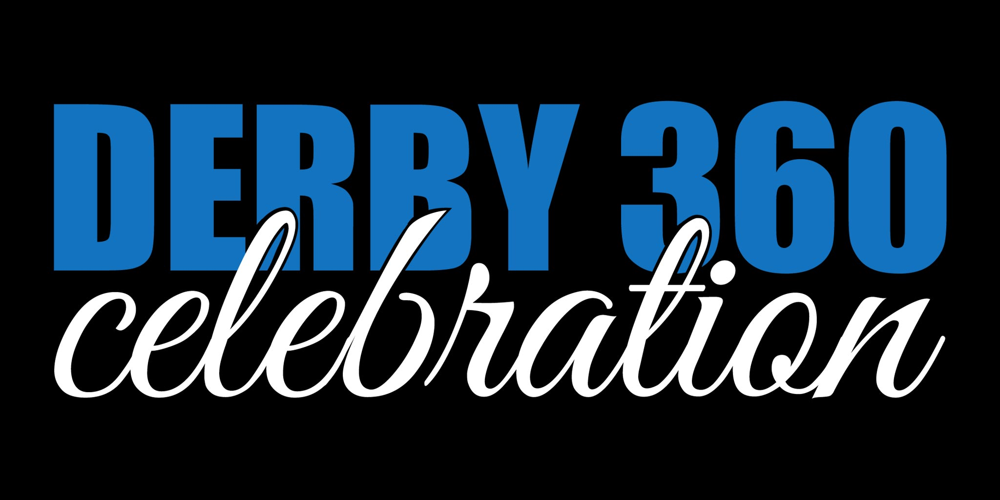
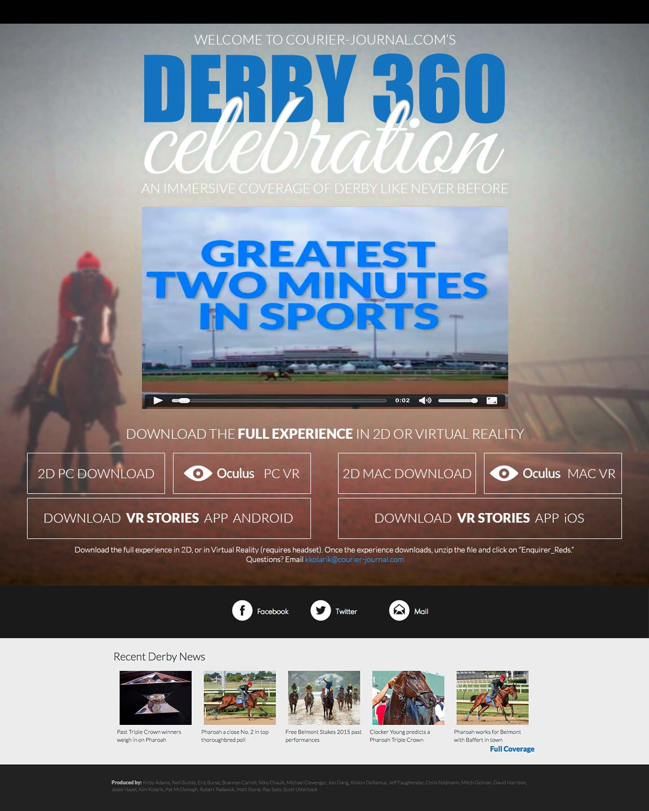

Case Study
Derby360 Celebration
Gannett Digital is leading the way with Virtual Reality (VR) storytelling. I was tasked with acting as a Co-Project Manager (asset-side), video editor, 3d implementation using the provided Unity3d template (from the Gannett Digital team), and finally the Interaction/Visual Designer for the Derby360 Celebration experience web content.
See the live project!
The Challenge
The Courier-Journal was asked to be an example of the VR storytelling experience with an extensive coverage of the Kentucky Derby with the new VR techniques.
Additional challenges arose when accelerated timelines and additional workloads were introduced as we were asked to produce around 4x the content with a launch date an entire week earlier than we had originally planned.
The Process
Organization
I knew organization would be key to completing this project on time, so I created a filesystem organization, naming convention system, and created an asset architecture checklest that I posted in a public area that allowed my other Co-Project Manager to reference to see which 360 degree footage or other assets we currently had or still needed.
Video Editing
The next step in the production process was to take the 360 degree footage shot from the various photographers, organize the source footage, and edit the videos for length in Adobe Premiere. Special consideration was taken when editing the footage due to the very nature that the footage could potentially be viewed in 360 degrees.
Unity3d
Next in the process I took the exported videos and built the interactive VR (both Oculus Rift and desktop versions) using the supplied Unity3d template.
Derby360 Branding
We needed branding for our VR experience for inside of the VR experience as well as the web landing page. I initially started off with sketching various logotype ideas and then refined using Adobe Illustrator.
Intro Video
Inside of After Effects I produced an intro video describing what viewers would find within our Derby 360 coverage.
See the video in the live project!
Landing Page
I designed the landing page for the Derby360 Celebration to be responsive across all platforms, utilize a visually striking Kentucky Derby related image, and be simplistic in directing users to download a version of the VR experience that would be appropriate for them (based on their operating system and whether or not they had the Oculus Rift).
No exception to my usual process, I began designing as a sketch and then refined to a high fidelity (hi-fi) mockup in Photoshop. The landing page was coded by our developer based on the hi-fi mockup.
Results
After our launch we had approximately twenty (20) VR project downloads. Overall that number is a little disappointing, but being on the forefront of this storytelling technique is still incredibly exciting!